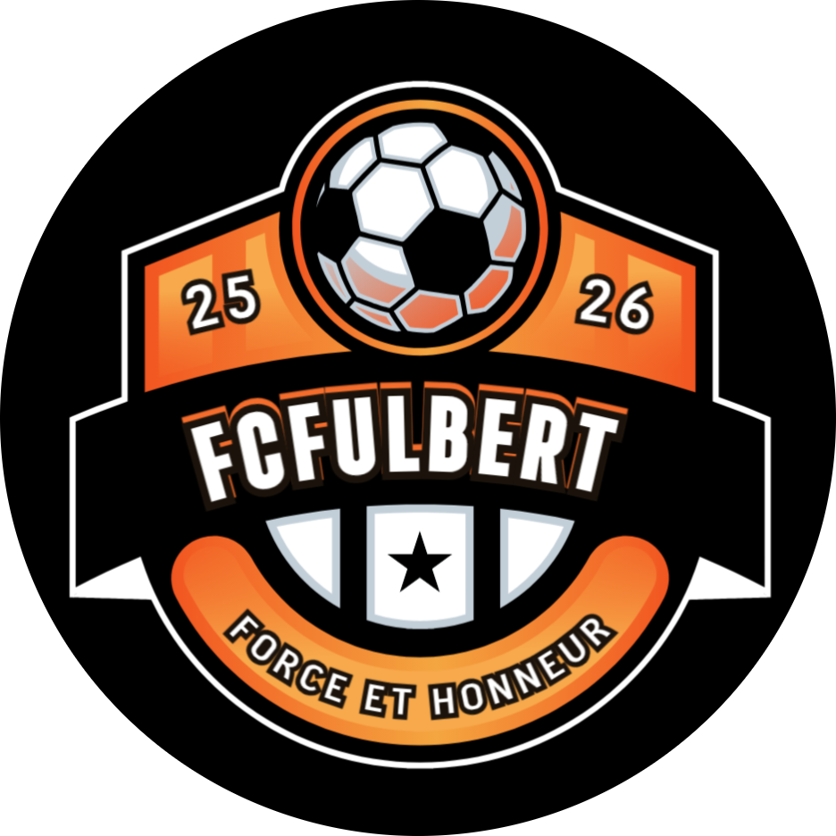
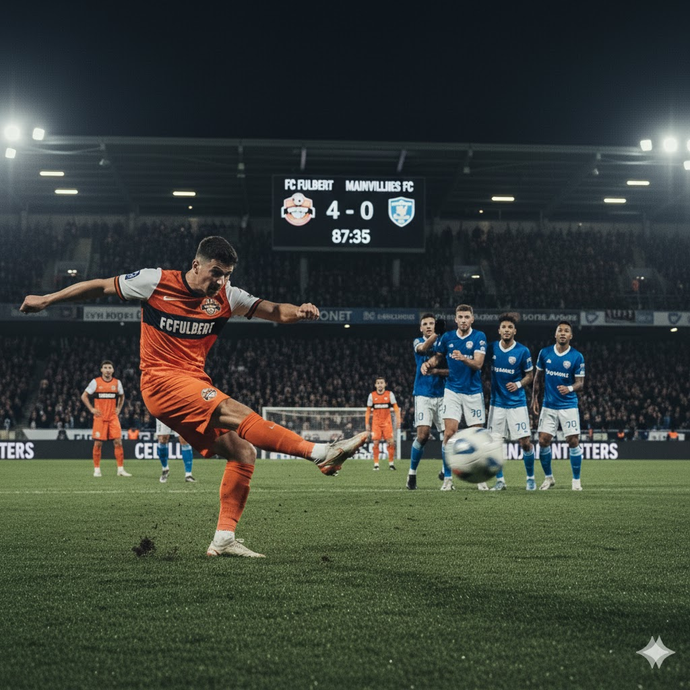

Notre Position au Classement
Position actuelle du FC Fulbert en championnat 2024-2025
Le FC Fulbert se positionne actuellement à la 3ème place du classement avec 45 points après 20 matchs disputés. Notre équipe affiche un excellent bilan avec 13 victoires, 6 matchs nuls et seulement 1 défaite, pour une différence de buts positive de +12. Cette performance reflète la qualité du jeu et l'engagement de nos joueurs tout au long de la saison.
3ème
Position
45
Points
+12
Diff. Buts
Tableau du Championnat 2024-2025
| # | Club | MJ | G | N | P | BP | BC | DB | Pts | 5 derniers |
|---|---|---|---|---|---|---|---|---|---|---|
| 1 |
AS Chartres
|
20 | 15 | 3 | 2 | 42 | 18 | +24 | 48 |
|
| 2 |
Dreux FC
|
20 | 14 | 4 | 2 | 38 | 16 | +22 | 46 |
|
| 3 |

FC Fulbert
|
20 | 13 | 6 | 1 | 36 | 24 | +12 | 45 |
|
| 4 |
Lucé Sports
|
20 | 11 | 5 | 4 | 32 | 22 | +10 | 38 |
|
| 5 |

Mainvilliers FC
|
20 | 10 | 6 | 4 | 28 | 20 | +8 | 36 |
|
| 6 |
 Vernouillet United
Vernouillet United
|
20 | 9 | 5 | 6 | 26 | 24 | +2 | 32 |
|
Zone de promotion
|
Statistiques : MJ = Matchs joués | G = Victoires | N = Nuls | P = Défaites | BP = Buts pour | BC = Buts contre | DB = Différence de buts | Pts = Points